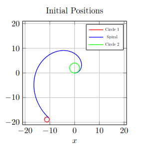
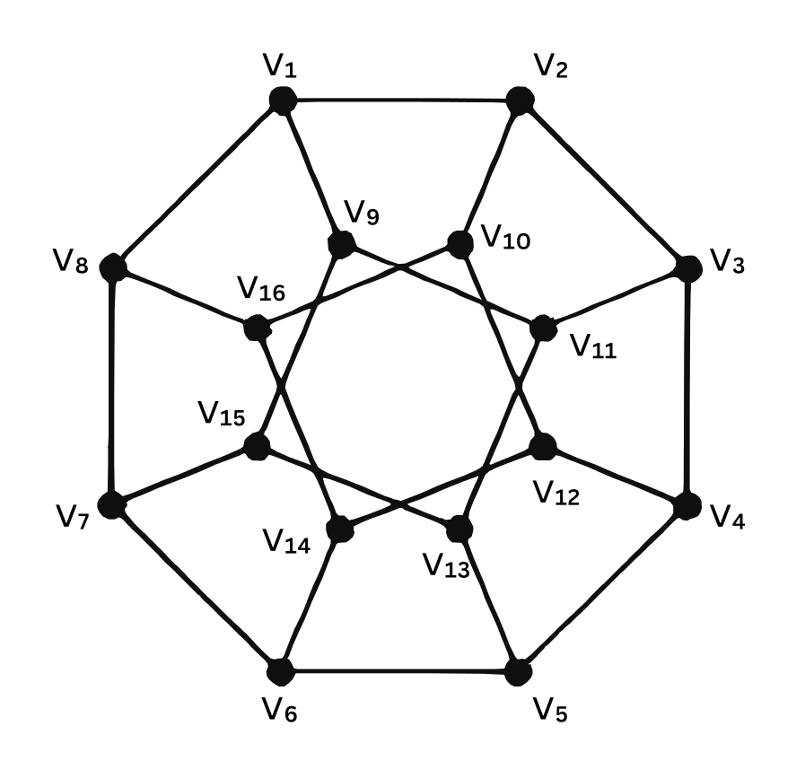

Provide descriptive answers for all questions. Explain your thought process well. Partial points will be awarded for partial solutions.
You are free to use the internet and any other resources for solving the application. You are NOT allowed to collaborate with others. Please cite whatever reference(s) you use.
The goal of the application is for you to learn as much as possible. Resources have been provided next to questions wherever necessary. All the best and have fun!
A helpbook has been provided here to make your apping easy on the technical parts. You may find resources relevant to the application on our website.
Your solutions can be manually written, in digital notes, documents or in Latex. Upload all your scanned images, descriptive answers, and others in a single PDF file and submit the final document before the deadline. There is no weightage to the mode of your submission. Spend more time on solving the app and not on beautifying it!
Keep your answers brief and elegant. Explain your thoughts concisely. Ensure to not exceed the word limit indicated next to the question.
The PDF should be named
<Firstname>_<ROLLNUMBER(IN CAPS)>.pdf
(For example: Atreya_EE22B004.pdf).
The final PDF can be submitted here.
The deadline for submission is 22nd October, 2024, 23:59
Join this WhatsApp group for further notifications and updates.
Atreya Vedantam - +91 99624 97590
Pradyumnan Raghuveeran - +91 99626 35332
You can find the contacts of the section masters in the helpbook.
Why do you want to be part of the Mathematics Club? (150 words)
Have you been to Mathematics Club event(s)? Name and describe
your experience in the event(s).
(under 150 words)
What topic do you hate the most in mathematics? Describe its applications in the real world briefly. (100 words)
Calculus. It is what it is. You’ve known it for at least the past two years and you’ll keep on seeing it for the coming years (unlike the pure joy of your childhood which you left behind in third grade).
Complex Integrals! Evaluate the integral: \[\int_\gamma \frac{\sin z}{(z-1)(z-3)}dz\] where the curve \(\gamma\) is a square centred at the origin with its sides parallel to the coordinate axes and with side length 4 traversed twice in the clockwise direction. (Hint: What do you do when you can’t deal with multiple fractions in the denominator?)
If you need help with understanding what a complex integral is then click here to take an adventure over to the helpbook. (3 points)
Feynman for ya! Evaluate the integral (perhaps
using the Feynman
technique): (4 points)
\[\displaystyle \int_0^{\infty} \frac{\log(e
+ x^2)}{1 + x^2} dx\]
Geometry - the art of correct reasoning from incorrectly drawn figures. You may loathe it or love it, it is here to say hi :)
Great Distances: Derive the shortest path
between any two points on an 3-dimensional-sphere when you are
constrained to travel only along its surface. Say the first point is
\(\left(x_1, y_1, \sqrt{1 - x_1^2 -
y_1^2}\right)\) and the second point is \(\left(x_2, y_2, \sqrt{1 - x_2^2 -
y_2^2}\right)\) then find this shortest distance. (Hint: Look up
great
circles) (3 points)
Generalize and prove the above result for n-dimensions if you are up for
it! (Bonus)
Rolling rollers: \(Circle_1\) rolls on the outer
surface and \(Circle_2\) rolls on the inner
surface. Find the ratio of rotations (about their centres) of \(Circle_1\) : \(Circle_2\)
Radius of \(Circle_1\) \(= 1\)
Radius of \(Circle_2\) \(= 2\)
Equation of spiral
: \(r = 5\theta , \, \theta \, \in \, \left[0,
\frac{4\pi}{3}\right]\)
(Click
here if you don’t know how polar coordinates work) (3
points)

Algebraic symbols are used when you do not know what you are talking about.
KK and KV are playing a new game involving an \(n \times n\) grid of boxes. KV starts by placing a \(0\) or a \(1\) anywhere in the grid. KK then follows by again placing a \(0\) or a \(1\) in any of the remaining spaces. This continues until there is no spaces left. The goal of the game is determined by the determinant of the resultant \(n \times n\) matrix. If the determinant is \(0\), KK wins, else KV wins. Assuming both KK and KV play optimally, who would win and why?
You learnt about vectors in physics. Now let’s play with them in
math. Let us define an operator \(\Lambda:
\mathbb{V} \times \mathbb{V} \rightarrow \mathbb{V}\) which is
distributive, associative, anti-symmetric (If you wish to understand
what these terms mean click
here.) and follows: \(|\mathbf{e_1}\Lambda \mathbf{e_2}\Lambda .....
\Lambda \mathbf{e_n}|=1\) where \(\mathbf{e_i}\) are orthogonal unit vectors
in \(\mathbb{V}\) i.e. \(\mathbf{e_i} \cdot \mathbf{e_j} = 0 \ \ \forall \
i\neq j\). You would have encountered some of them in Cartesian
3D where (\(\mathbf{e_1,e_2,e_3}\))=(\(\mathbf{i,j,k}\)).
Now let’s try and intuitively understand operator \(\Lambda\).
Assume two 2D vectors \(\mathbf{v_1}\) and \(\mathbf{v_2}\). Can you somehow relate \(\mathbf{v_1} \Lambda \mathbf{v_2}\) to the cross product? Can you interpret it geometrically? (1 point)
Can you extend your previous result to three dimensions? (i.e what do you expect \(\mathbf{v_1}\Lambda \mathbf{v_2} \Lambda \mathbf{v_3}\) to be geometrically?) Now prove it.(2 points)
Let \(\mathbf{v_i} := (v_{i1}, v_{i2}, ..... v_{in})\). Can you represent \(\left(\mathbf{v_1}\Lambda \mathbf{v_2}\Lambda ..... \Lambda \mathbf{v_n}\right)\) in terms of the components of \(\mathbf{v_i}\text{ ; } i=1,2,3...n\) without any vector operations in some compact form. (Hint: Think of matrices and the cases you proved above.) Proof is not necessary (but will earn brownie points :)). Intuition is sufficient. (2 points)
Using the result in the previous part, can you prove a property about \(\frac{d}{dt}\left(\mathbf{v_1}\Lambda \mathbf{v_2}\Lambda ..... \Lambda \mathbf{v_n}\right)\) given that \(\mathbf{v_k}\) are dependent on \(t\) for all \(k\).(1 points)
Graphs aren’t just for math—they’re everywhere! They help us understand how things are connected and interact. A Graph is nothing but like a network of friends. Each friend is a node and the connections between them are represented by edges. Here are a few definitions.
Vertices (or Nodes): These are the points in a graph. Think of each person as a vertex.
Edges: These are the lines that connect two vertices. For example an edge shows that two people are friends.
Degree of a vertex: This tells us how many edges are connected to a vertex. In other words, the degree of a person (vertex) is how many friends they have.
Exploring Degree Sum and Number of Edges: Now that we know what vertices, edges, and degrees are, let’s dig a little deeper! Can you figure out how the sum of all degrees relates to the total number of edges (friendships) in the network? In other words imagine you have a network of friends. Each person (vertex) has a certain number of friends (degree). If we add up the number of friends everyone has, how can we figure out the total number of friendships? (2 points)
Chessboard with Graphs: We can model the chessboard as a graph in which each square is represented as a node. An edge connects two nodes if a knight can legally move from one square to the other. Your goal is to investigate the characteristics of this graph representing the knight’s movement!
Is the graph Bipartite? If it is Bipartite, try to give a Bipartition, else explain why. (2 points)
In general, try to think of a condition for a graph to be bipartite. (2 points)
Hamiltonian and Eulerian: A graph is called Hamiltonian if there exists a cycle (called a Hamiltonian cycle) that visits every vertex of the graph exactly once and returns to the starting vertex.
A graph is called Eulerian if there exists a circuit (called an Eulerian circuit) that traverses every edge of the graph exactly once and returns to the starting vertex.
Now consider the graph G:

Determine whether the graph G is Hamiltonian (Give a Hamiltonian cycle if it exists).(2 points)
Determine if the graph is Eulerian. What is a necessary condition for any graph to be Eulerian?(2 points)
Logical reasoning forms a very important part of framing mathematical arguments. This is an essential skill that helps you in proving and disproving claims that your fellow math enthusiasts may make (and is also helpful in proving that your friend is an RG). This section is designed to test how well you observe a given problem and how well you are able to put forth your arguments in favour of a claim.
Function foundry: Let \(\mathbb{A} \subset \mathbb{R_+}\), that is \(\mathbb{A}\) is a subset of the positive reals. Now \(f : \mathbb{A} \rightarrow \mathbb{R}\) is a function that satisfies the condition: \[f(x)f(y) = \frac{1}{x+y} \forall x, y \in \mathbb{A}\] Find a function \(f\) along with your choice of \(\mathbb{A}\) which satisfy the aforementioned condition. (3 points)
Back to basics: Let \(f : \mathbb{R_+} \to \mathbb{R}\) be given by \(f(x) = x - \frac{1}{x}\) for all \(x \in \mathbb{R_+}\). Now let \[g(x) = f\left(f(x)\right) - f\left(f\left(\frac{1}{x}\right)\right)\] where \(g\) is defined on the most exhaustive domain possible. What kind of function is \(g\)? Is \(g\) a special kind of function? (2 points)
Proof Theory!
The easy one: In a group of \(n\) friends, a person can shake hands with any number of other friends. Prove that there are at least two friends who shook their hands with the same number of people. Start by stating your proof technique and why you chose it. (2 points)
Do it by Exhaustion: Due to their ongoing rivalry, Atreya and Prad in their settlement chose to take half the set of coords with them. Each coord from Atreya’s team chooses a best friend from Prad’s team and vice versa, if two coords choose each other they are considered mutual best friends. Prove that if there are infinitely many coords, the probability that there are no mutual best friends is \(\textstyle\frac{1}{e}\)(3 points)
Torn realities: Show that if there cannot exist any continuous map from the disk to its entire boundary then continuous maps of the disk onto itself must have at least one fixed point. If you don’t understand what this statement means, here is a short read to help you out!(Bonus)